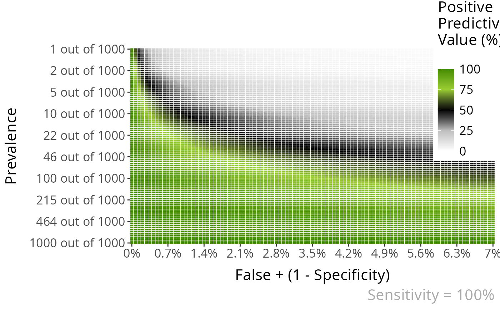

Plot heatmaps showing the PPV for a given Sensitivity and a range of Prevalences and False Positive values or NPV values for a given Specificity and a range of Prevalences and True Positive values
Usage
PPV_heatmap(
min_Prevalence = 1,
max_Prevalence = 1000,
Sensitivity = NULL,
Specificity = NULL,
limits_Sensitivity = NULL,
limits_Specificity = NULL,
one_out_of = FALSE,
overlay = "no",
overlay_labels = "",
overlay_extra_info = FALSE,
overlay_position_FP = NULL,
overlay_position_FN = NULL,
overlay_prevalence_1 = NULL,
overlay_prevalence_2 = NULL,
uncertainty_prevalence = "high",
label_title = "",
label_subtitle = "",
Language = "en",
folder = "",
PPV_NPV = "PPV",
steps_matrix = 100,
DEBUG = FALSE,
...
)Arguments
- min_Prevalence
[x] out of y prevalence of disease: [1-Inf]
- max_Prevalence
x out of [y] prevalence of disease: [1-Inf]
- Sensitivity
Sensitivity of test: [0-100]
- Specificity
Specificity of test: [0-100]
- limits_Sensitivity
c(min Sensitivity, max Sensitivity)
- limits_Specificity
c(min Specificity, max Specificity)
- one_out_of
Show y scale as 1 out of x [TRUE, FALSE] FALSE by default
- overlay
Type of overlay: ["line", "area"]
- overlay_labels
Labels for each point in the overlay. For example: c("80", "70", "60", "50", "40", "30", "20 y.o.")
- overlay_extra_info
show extra info in overlay? [TRUE/FALSE]
- overlay_position_FP
FP value (position in the x-axis) for each point in the overlay. For example: c(7, 8, 9, 12, 14, 14)
- overlay_position_FN
FN value (position in the x-axis) for each point in the overlay. For example: c(7, 8, 9, 12, 14, 14)
- overlay_prevalence_1
Prevalence value (position in the y-axis) for each point in the overlay. For example: c(1, 1, 1, 2, 1, 1)
- overlay_prevalence_2
Prevalence value (position in the y-axis) for each point in the overlay. For example: c(26, 29, 44, 69, 227, 1667)
- uncertainty_prevalence
How much certainty we have about the prevalence ["high"/"low"]
- label_title
Title for the plot
- label_subtitle
Subtitle for the plot
- Language
Language for the plot labels: ["sp", "en"]
- folder
Where to save the plot (the filename would be automatically created using the plot parameters)
- PPV_NPV
Should show PPV or NPV ["PPV", "NPV"]
- steps_matrix
width of PPV/NPV matrix. 100 by default
- DEBUG
Shows debug warnings [TRUE/FALSE]
- ...
Other parameters. Now used to pass dpi, height and width in the Show and Save plot section
Examples
PPV_heatmap(
min_Prevalence = 1,
max_Prevalence = 1000,
Sensitivity = 100,
Specificity = 98,
Language = "en"
)
#> ℹ By default, if Specificity is given, we show Specificity +-5.
#> If you want a range, use limits_Specificity

#> $PPV_melted
#> # A tibble: 10,201 × 8
#> prevalence_1 prevalence_2 sensitivity specificity FP PPV prevalence_pct
#> <dbl> <dbl> <dbl> <dbl> <dbl> <dbl> <dbl>
#> 1 1 1 1 1 0 1 1
#> 2 1 1.07 1 1 0 1 0.933
#> 3 1 1.15 1 1 0 1 0.871
#> 4 1 1.23 1 1 0 1 0.813
#> 5 1 1.32 1 1 0 1 0.759
#> 6 1 1.41 1 1 0 1 0.708
#> 7 1 1.51 1 1 0 1 0.661
#> 8 1 1.62 1 1 0 1 0.617
#> 9 1 1.74 1 1 0 1 0.575
#> 10 1 1.86 1 1 0 1 0.537
#> # ℹ 10,191 more rows
#> # ℹ 1 more variable: PPV_calc <dbl>
#>
#> $p
 #>
#>